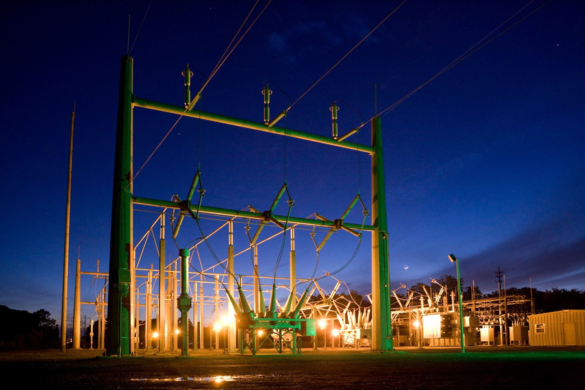

善意で閉じられる扉の前に立つ
あなたはいま、閉じかけている扉の前に立っている。扉の名前は「AGIを安全に開発・運用できると認められた国のクラブ」である。扉は善意で閉じられる。閉じようとしている者たちに悪意はない。むしろ彼らは、この扉を閉じることが人類を守ると信じている。AI安全サミットがブレッチリーで開かれ、29カ国が存亡リスクを公式に認識した。EU AI Actが世界最初の包括的AI規制として施行された。各国がAI安全研究所を設立した。その一つひとつが、扉を閉じる力になっている。
2026年4月16日、一般社団法人AIアライメントネットワーク(ALIGN)が『日本AGI基盤構想(NAGI計画)』の第二版を公表した。この文書は、超大規模計算施設群と専用電源を国家プロジェクトとして整備する政策提言である。だが読み進めると、これが単なるインフラ投資計画ではないことが分かる。第二版が前面に押し出したのは、時間の問題だった。「AGI開発能力を持つ国の枠組みが制度的に固定化される前に、日本が開発能力を確保する時間的猶予は、多くの人が想定するよりも短いかもしれない」——この一文が構想全体の重力源として働いている。
本稿はNAGI構想を要約しない。要約は原典PDFを読めば足りる。本稿が問うのは、なぜこの構想がいま書かれたのか、何が書き手を急がせているのか、そして扉の外側にいる者が扉の内側にいる者から何を期待されているのか——である。議論の核は一つの歴史類比にある。核拡散防止条約(NPT)が保有国と非保有国の区分を不可逆的に固定したように、AGI開発においても同じ構造が繰り返される可能性がある、という類比。類比は素引用ではない。類比の先にある逆説こそが、本稿の出発点である。
核拡散防止条約が教えた、固定化の物理学
1968年、核拡散防止条約(Treaty on the Non-Proliferation of Nuclear Weapons)が国連で署名のために開放された。条約の論理は明快だった——核兵器は危険である。ゆえに、これ以上広めない。既に保有している五カ国(米・ソ・英・仏・中)は、国際原子力機関の枠組みのもと段階的に軍縮を進める。保有していない国は、新たに開発・取得してはならない。善意に基づく枠組みだった。核戦争を防ぐためには、保有国の数を増やさないことが理にかなっていた。
だがNPTがもたらしたのは、人類の核リスク低減であると同時に、保有国/非保有国の区分の不可逆的固定だった。条約発効後、後から核兵器を保有しようとした国は国際制裁・外交的孤立・経済封鎖に直面した。インドとパキスタンはNPTに加盟せず独自に核実験を強行した(1974年、1998年)が、両国とも代償として長期の制裁を受けた。北朝鮮はNPTから離脱(2003年)して核開発を公然化したが、国際社会からの孤立は深刻化した。条約は「危険だから広めない」の論理で、参入可能な国の範囲を構造的に閉じたのである。
ここからがNAGI第二版の本質的な論点である。核兵器とAGIでは、拡散と安全性の関係が逆転している。核兵器においては、技術の拡散そのものが脅威を増大させた。保有国が増えるほど、誤算・事故・意図的使用のリスクは積み上がる。だからNPTの論理は正しかった——少なくともその論理空間の中では。
AGIは違う。AGIにおいては、開発能力が少数国に集中すること自体が構造的リスクである。開発が一国・一企業に集中すれば、その主体の価値観・商業的判断・政治的都合が人類のAGI設計思想を事実上独占する。逸脱を検出・対抗できる別のシステムが存在しなくなる。ALIGNが「AI生態系」と呼ぶもの——多様なシステムが相互に依存し相互に牽制するネットワーク——は、多極的な開発能力がなければ成立しない。核の論理を逆向きに適用しなければならない領域で、核の論理がそのまま輸入されようとしている。これがNAGI構想が問題にする構造的ねじれである。
参入拒否のメカニズムは既に部分的に動いている。米国は2022年以降、先端半導体の対中輸出管理を段階的に強化し、2024年にはHBMや先端GPUの輸出規制を拡張した。日本・オランダも同調した。規制の目的は「安全保障」であり、悪意ではない。だがこの規制フレームが安定化するにつれ、「誰に何を売ってよいか」の境界線は雰囲気として固定化されていく。扉の存在は、条約調印式としてではなく、個別の輸出ライセンス審査の積み重ねとして顕在化する。
FLOPSを捨て、電力を測る国家

NAGI構想を読んで最初に目を引くのは、具体的な規模目標ではない。FLOPS値を数値目標にしていないという点である。第3章で明言されている——「本計画では、あらかじめ設定したFLOPS値を数値目標として掲げず、電力予算(Power Budget)を基軸とした設計を採用する」。100MW、300MW、1GW、10GWという段階が基本単位になる。FLOPSは結果であって制約ではない。同じ電力でも、アーキテクチャや演算精度やアルゴリズム効率によって、実効性能は桁単位で変化するからだ。
この設計思想の転換は、表面的には技術的な選択に見える。だが深層では、国家競争力の測定軸そのものを書き換えている。ALIGNが導入する指標の名前は、Watts-per-intelligence(WPI)——電力あたりの知能変換効率。ある時点の先端技術を前提にしたとき、WPIには物理的制限がある。つまり、一定の知能水準を国内で維持しようとするなら、最低限の電力を自前で調達できなければならない。電力は技術の関数ではなく、技術の制約である。この順序の入れ替えが、AGI時代の国家設計原理を変える。
初期段階。既設電源・系統電力で稼働。10万世帯分の常時電力に相当
専用電源の並行準備。中規模SMR1基〜2基相当
SMR一体型運転開始。Oracleが米国で計画する規模と同水準
広域ブロック拠点の総量目標。原発10基分の専用電源
なぜ電力なのか。Epoch AIの追跡データによれば、AI学習に投入される計算量は年間約4倍のペースで増大している。これを支えるエネルギー需要も当然爆発的に伸びる。国際エネルギー機関(IEA)は2030年までに世界のデータセンター電力需要が現在の2倍以上の945TWhに達すると予測している。2040年頃までの伸びはさらに加速しうる。情報産業が電力産業に吸収される構造的転換が起きている。この構造下では、計算資源の競争は電力調達の競争に還元される。
逆説がここに現れる。情報空間の競争だと思われていたAGIレースは、発電所の競争だった。ソロモノフ帰納への漸近を示唆するGoogle DeepMindらの研究(2024)が正しいとすれば、既存Transformerのスケーリング延長線上でAGI級能力に到達する可能性がある。だがスケーリングを支えるのはアルゴリズムではなく電力である。アルゴリズムは数時間で他国に伝播するが、原子炉は10年で1基しか建たない。競争変数の時定数が根本的に違う。
AGIレースは原子炉のレースに還元される
電力が制約になったとき、米国テック企業が何を始めたか。2024年、Oracleは3基のSMR(小型モジュール炉)で合計1GW出力を調達し、データセンター全電力を賄う計画を公表した。Larry Ellisonは「許可取得済みで設計中」と述べている。GoogleはKairos Power社と提携して最大500MW規模のSMRを導入する計画を結んだ。AmazonはX-energy社の約5億ドル資金調達ラウンドにアンカー投資家として参加し、最大960MWの原子力電源確保に動いた。Microsoftは停止中だったスリーマイル島原発を再稼働させ、20年間835MWの電力購入契約(PPA)を締結した。
これらは単独の事例ではない。2024年から2025年にかけて、米国主要テック企業は原子力電源の自社確保という新しい競争軸に一斉に参入した。理由は単純である。AI学習は数週間から数ヶ月にわたって一定の高電力を消費し続ける。ベースロード電源である原子炉の容量因子90%超は、この負荷パターンと極めて相性がよい。再生可能エネルギーの変動に対応するための蓄電設備も最小限で済む。運転時CO₂排出ゼロで将来のカーボンプライシング導入リスクも回避できる。経済合理性がテック企業を原子力に押し戻している。
| 主体 | 電源形式 | 規模 | 契約・投資の特徴 |
|---|---|---|---|
| Oracle | SMR 3基一体型 | 約1 GW | DC全電力を自社SMRで賄う計画。設計段階 |
| Microsoft | 既設原発PPA | 835 MW × 20年 | スリーマイル島再稼働契約。Unit 1を復活 |
| SMR (Kairos Power) | 最大500 MW | 新興企業との長期開発提携 | |
| Amazon | SMR (X-energy) | 最大960 MW | 約5億ドル資金調達にアンカー投資 |
| 商船三井(MOL) | 洋上DC(船載発電) | 20〜73 MW | 9千トン級船舶に搭載、2027年稼働予定 |
ここで競争変数が再定義される。AGIレースの勝敗を決めるのは、アルゴリズムの革新でもGPUの調達量でもない。原子炉の新設許認可を速く通せる国、ベースロード電源を確保できる国、冷却水と立地と地元合意を供給できる国が勝つ。フランスは国家HPC基盤(Jean Zay)を活用した研究環境でMistral AIをはじめとするフロンティア企業の創出を後押しした。UAEは国家計算基盤を活用してFalcon 180Bを開発した。国家が計算基盤を整備することが需要を「待つ」のではなく「生む」という構図は、国際的に実証されつつある。
日本がこの競争に参入するためには、物理インフラの時定数を短縮する制度設計が必要になる。NAGIが第7章で原子炉の新設許認可・規制緩和、SMRの認可プロセス確立、洋上プラットフォームの法整備、官民ファンド型PPPを列挙するのはこのためである。AGI開発はもはや情報産業の一部ではない。エネルギー政策・原子力政策・土地利用計画の一部である。この認識の転換ができない国は、アルゴリズムで勝っても電力で負ける。
扉の外側に残される者の値段
NAGI構想の付録1には、日本がAGI開発能力を保有しない場合の経済的リスク試算が収められている。前提は明示的だ——AGIが「人間がリモートワークで遂行できる仕事をすべて実行できる」という強い仮定を置く。日本の在宅勤務可能比率約30%を就業者数6,781万人に当てると、AGIが直接競合しうる労働報酬は年94.3兆円(名目GDPの14.7%)になる。この94.3兆円が、三つの損失経路の母数になる。
年6.6〜25.5兆円の海外流出。AGIを平時に使えるが、基盤が海外にある限りレントが構造的に国外へ流出する。経産省は国内パブリッククラウド起因の赤字を2030年頃に年約8兆円と見込んでおり、これはAGIが完成しなくても既に見えている下限である
3か月停止で2.4〜7.1兆円の業務停止相当額。輸出管理の強化、同盟国優先の供給制限、クラウド事業者のポリシー変更などで海外AGI基盤へのアクセスが制限された場合。OECDは2021年の半導体不足が日本GDPを0.5〜1%(3.2〜6.4兆円)押し下げた可能性に言及しており、同じオーダーに入る
10年で32.9〜179.9兆円のGDP水準差。井上智洋が「第二の大分岐」と呼ぶ構造。AIとロボットが人間の介在なく財・サービスを生産する経済では、成長率が爆発的に加速する。第一の大分岐が工場と蒸気機関で決まったように、第二の大分岐は自律的生産基盤を持つか否かで決まる
この数字を数字として読んではならない。これは不在の値段である。日本がAGI開発能力を保有しないことによって支払う、受動的な税金。扉の外側にいる者が、扉の内側にいる者へ納め続ける歳入。そして三経路の中で最も重いのは取り残しシナリオだ。依存と遮断は回避策がある。依存は関係の再設計で緩和できるし、遮断は代替基盤への切替で対応できる。だが取り残しは複利で広がる。第一の大分岐が後発国のキャッチアップで部分的に縮小したのとは違って、第二の大分岐は自己増幅の構造により不可逆化する可能性がある。
井上智洋が『人工知能と経済の未来』(2016)と『純粋機械化経済』(2019)で展開した議論を、NAGI付録1はAK型生産関数の枠組みで引いている。AI・ロボットが自身を生産する経済では、資本蓄積と生産が同じ変数になり、GDP成長率は指数的に発散する。この構造下で「AGI開発能力を持つ国」と「持たない国」の間に開く差は、過去の先進国/途上国の格差とは性質が違う。キャッチアップが物理的に不可能になる段階が存在する可能性がある。
結論を述べる前に、一つ認めるべきことがある。NAGI構想は完璧な設計ではない。SMRの国内商用実用化には時間がかかる。原子炉新設の社会受容性は不確実だ。2023年に米NuScaleのCarbon Free Power Projectがコスト超過で中止されたように、SMRの経済性自体も検証途上にある。10兆円規模の国家プロジェクトが政権交代や財政状況の変化で中断するリスクもある。本稿はNAGIを完成した処方箋として推奨しているのではない。だが構想が指摘した構造——時間窓が閉じる前に参入する必要がある、そして参入に必要な変数は物理インフラである——は、NAGI自体の成否とは独立に成立する論理である。
2025年10月14日、ALIGNがNAGI初版を公表した。2026年4月16日、第二版が公表された。半年で改訂された第二版は、初版にはなかった強い一文を加えていた——「多くの人が想定するよりも短いかもしれない」。この一行は予言ではなく、警告でもない。既に動いている時計の針の音である。
扉は善意で閉じられる。善意は、外側を思いやる形をとらない。